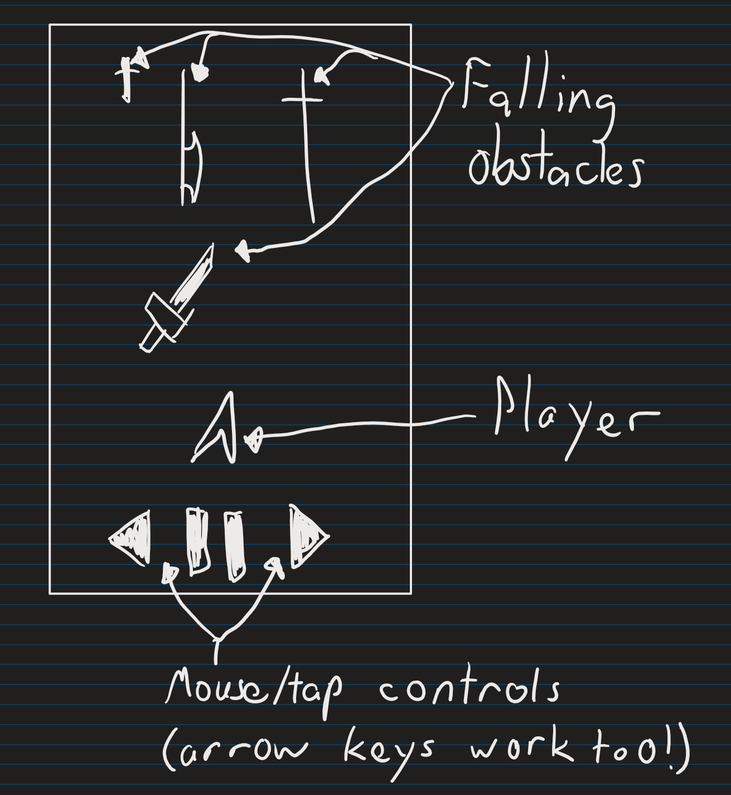
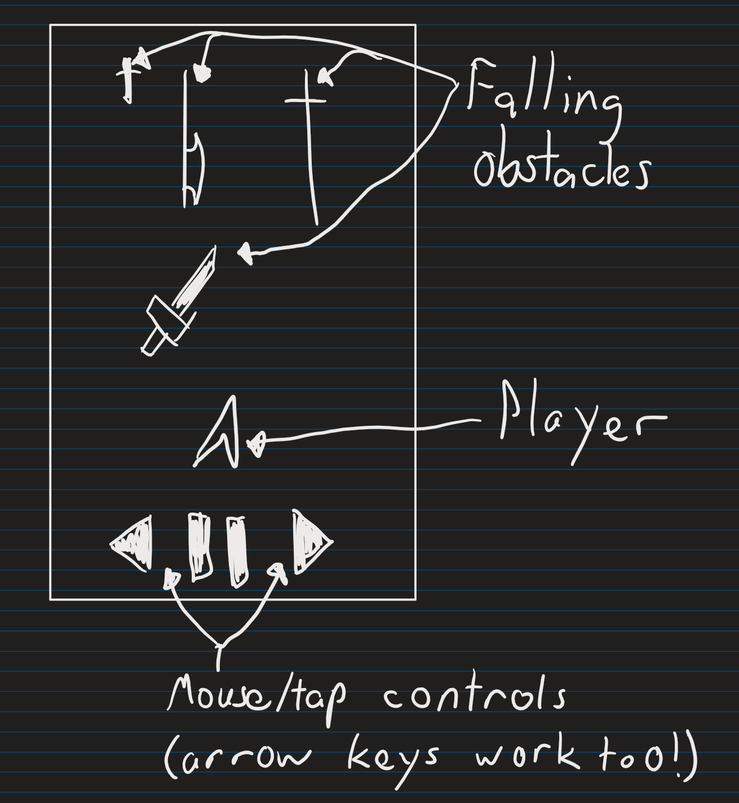

Story
The story is...that there isn't one! No need to think about complex political topics, or deep moral quandries that will test the very nature of your mortal soul. Instead, sit down and begin avoiding those blades that are coming at you!
What is Speed? Great question you beautiful person! That's what we'll be going over here, so you can better understand and enjoy the cultural revolution that is Speed!
Speed is a game where you survive by dodging blades coming at you and accelerating to a velocity that will take you well beyond the stars*!
*Disclaimer: This game will not actually take you beyond the stars, nor will your velocity break any known speed barriers.**
**Note: For now...
What genre is speed? I'm glad you had the forseight and intelligence to ask such things! Speed is an endless runner game, like Temple Run. The main difference between Speed and Temple Run is that Speed is actually a good game, while Temple Run isn't.
Sadly, Speed is currently only planned to work on desktop since the control scheme for mobile would be quite hard, and I can't think of a funny joke here so instead I have a picture of a dog in a hat for you.
The story is...that there isn't one! No need to think about complex political topics, or deep moral quandries that will test the very nature of your mortal soul. Instead, sit down and begin avoiding those blades that are coming at you!
The idea of the graphics/sounds of this game is that they are minimal and simple. The character will be just a little arrow guy who is dodging simple blades of all different varieties (some even I don't know about)!
Meanwhile, the sound will also be very minimal, with some soft and subtle SWOOSHING noises happening as blades pass by, and some sort of sound to let you know that you have been pierced by a blade of mysterious and unknown origin.
There's not much too it! You move left and right with your mouse to avoid blades as they fall towards you from the top of the scren. Good luck!
 

This game is a sequel to a game made on the TI-84 calculator system, titled Speed. This game is a sequel to his original work of art, and I hope I can do Willus and Speed proud by making this.
My name is Justin Neft. I'll give more info once I get something interesting for you.